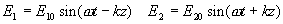
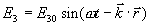
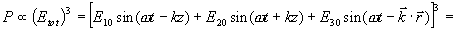
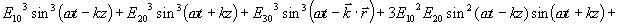
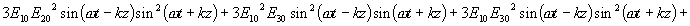
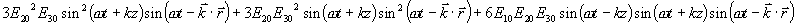
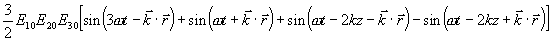
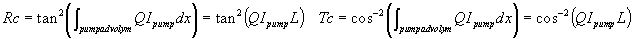

Faskonjugering matematiskt
Vi har de två motpropagerande vågorna:

och till detta kommer den svaga proben (den som ska totalreflekteras):

Vi vet nu att dipolernas oscillation, polarisationen (P) i mediet beror kubiskt av det totala E-fältet:


Den sista termen i denna köckenmödding ådrar sig nu vårt obegränsade intresse och kan skrivas om mha lite trigonometri; som:

Av detta är det nu den andra termen som intresserar oss. Vi ser att dipolerna svänger som en våg med frekvensen w med mosatt riktning mot den som proben hade. Om den är fasmatchad kan den uppenbarligen ge upphov till en sådan våg. Poängen är att den alltid är det eftersom vi vet från signalen att en våg med vinkelfrekvensen w ska ha ett cirkulärt vågtal k. Eftersom inga andra våglängder är inblandade kan fasmatchning aldrig vara ett problem.
För att nu ta reda på hur mtcket som "reflekteras" får vi ställa upp kopplade vågekvationer, göra ett antal drastiska approxiamtioner och därefter lösa de kopplade diffekvationer som uppkommer. Detta ligger utanför denna boks ambitioner men kan studeras i Yariv: "Optical Electronics�", Oxford texts, ISBN 0-19-510626-1. Resultaten däremot:
Den refkterade vågen brukar kallas för den konjugerade vågen eller konjugatet, och vi definierar den faskonjugernade spegelns reflektans, Rc, som kvoten mellan inkommande signalintensitet och reflekterad, och på samma sätt dess transmittans, Tc, som kvot mellan inkommande signalintensitet och transmitterad.

Notera att ingen av dem är begränsade av värdet 1. Q är en materialberoende konstant.
Tillbaka till ickematten